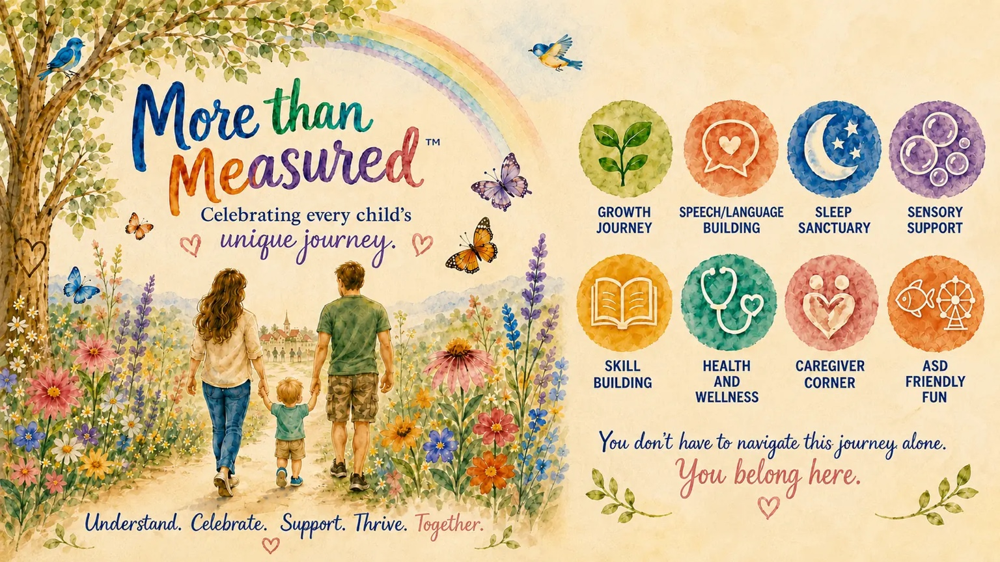

FOR THE EVERYDAY MOMENTS
Every child.
Their own journey.
Practical ideas for the routines, small wins, and unexpected turns of family life.
You know your child best. We're here with useful starting points, thoughtful tools, and room to find what works for your family.

START WHERE YOU ARE
What would help today?
Choose a familiar moment.
Take one useful idea with you.
A little more predictability.
Bedtime, meals, potty learning, and transitions.
Explore daily routines → 02 / CONNECTION & COMFORTMore ways to connect.
Communication, sensory needs, and play.
Explore connection → 03 / PLANNING TOGETHERFeel a little more prepared.
Outings, family safety, and caregiver handoffs.
Explore planning →FROM THE RESOURCE LIBRARY
Small places to begin.
Building a calmer bedtime routine
Use predictable steps, sensory clues and simple tracking to learn what helps bedtime go more smoothly.
Read the guide CommunicationSupporting communication beyond spoken words
Make room for gestures, signs, pictures, devices and speech while focusing on meaningful communication.
Read the guide CaregiversOrganizing the information everyone needs
Keep routines, medications, contacts, preferences and useful observations understandable to another caregiver.
Read the guideTHE APP · AVAILABLE NOW
A place for the things
that matter to your family.
More Than Measured brings routines, everyday observations, and caregiver information together—without reducing a child to a score or milestone.
Download MTM for Windows from the Microsoft Store or open the web app today. Create an account and start a seven-day household trial without a card. On iPhone, iPad, and Android, you can save the web app to your Home Screen while mobile app-store versions are still in development.
Growth & small wins
Room for progress that follows its own path.
Communication & routines
A clearer picture of what helps day to day.
Caregiver connection
Useful information for the people who share the care.
GET THE APP
Keep More Than Measured close by.
Now available for Windows in the Microsoft Store. On iPhone, iPad, and Android, use the web app and follow the Home Screen instructions below. Mobile app-store versions are not available yet.
iPhone or iPad · Safari
- Open the live app in Safari.
- Tap Share. If needed, tap the Page Menu first, then Share.
- Tap Add to Home Screen, turn on Open as Web App if shown, then tap Add.
Android · Chrome
- Open the live app in Chrome.
- Tap the three-dot menu and choose Install app or Install and create shortcut.
- Tap Install and follow the prompts.
Windows · Microsoft Store
Get More Than Measured from the Microsoft Store for your Windows computer.
Download for WindowsYour account and synced household data will carry over to the App Store and Google Play versions when they are released: just sign in with the same account. Sign in with that account on each device to synchronize your data. Offline features are available after the web app completes its first online load; account, billing, and shared-data updates require a connection.